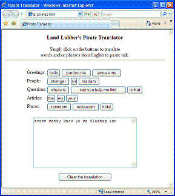

Name: _________________________________________
In 1995, John Baur and Mark Summers invented a new holiday, International Talk Like a Pirate Day. As they proposed it, on every September 19th, people all around the world would be united in common purpose by talking like a pirate (with lots of "Arrrrs" and "Ahoys" and the like). Since then, International Talk Like a Pirate Day has received widespread publicity, especially since columnist Dave Barry began lobbying for the holiday. At the official Talk Like a Pirate Day Web site, www.talklikeapirate.com, you can read about the history of the holiday, order official merchandise, and even experiment with a simple Web page that translates simple English phrases into pirate talk.
The following Web page is a framework for an alternative English-to-Pirate translator. As is, it contains two buttons, labeled "hello" and "stranger", and a text area. When the user clicks on a button, the corresponding Pirate word or phrase is added to the text area. For example, if the user were to click on the "hello" button, the word "ahoy" will appear in the text area. If she then clicks on the "stranger" button, then "scurvy dog" is added to the text area, resulting in the phrase "ahoy scurvy dog."
|
|
EXERCISE 1: Cut-and-paste this HTML text into a Web page named pirate1.html and verify that it behaves as described.As the page is currently written, multiple translations are awkward. If you finish translating one phrase and want to begin a new one, simply refreshing the page does not suffice to clear the text area. Instead, you must click the mouse in the browser's Address box and hit enter to reload the page and reset the text area. To make repeated translations easier, add a button directly below the text area labeled "Clear". When the user clicks on this button, a function should be called to clear the text area (i.e., set its contents to be the empty string).
EXERCISE 2: Extend pirate1.html by adding new words and phrases. For each new word or phrase, you will need to add a button with the appropriate label and translated pirate phrase. At a minimum, you must add the new words and phrases below. However, feel free to add a larger vocabulary (see www.talklikeapirate.com for ideas).
English word/phrase Pirate equivalent Greetings: pardon me avast excuse me arrr People: sir matey madam proud beauty officer foul blaggart Questions: where is whar be can you help me find know ye is that be that Articles: the th' my me your yer Places: restroom head restaurant galley hotel fleabag inn
EXERCISE 3: As the vocabulary of your pirate translator grows, the buttons in the page can appear cluttered. In particular, finding the button corresponding to a desired word or phrase can become a chore. Add an HTML table to your page to organize the buttons by category. For example, all greetings should appear together on the same row, with the label "Greetings:" in the left column. Similarly, all people should be grouped together on a row with the text label "People:", and so on for each category of speech. The screen shot below shows a sample page using a table to organize the layout. Feel free to add other elements to the page (e.g., pirate images) to improve its appearance.

As you no doubt noticed, each button in the pirate1.html page is of the same form. Individual buttons differ only in the button label (the word/phrase to be translated) and the translated word/phrase added to the text area. With a little more programming knowledge, it should be possible to automate the generation of the buttons so that the programmer would not need to add new buttons every time the vocabulary expands. Instead, the programmer could enter the words and phrases in a single list (denoted with [ and ] in JavaScript) and then have the buttons generated via JavaScript when the page loads. This can be accomplished with the following code, which uses a list named PHRASES to store the English and pirate words (preceded by category headings).
|
|
EXERCISE 4: Save a copy of your pirate1.html page under the name pirate2.html. Then, modify this new page by replacing all of the buttons in the body with the above JavaScript code segment. Once you have tested the page to be sure that it behaves as described, extend it by adding your new words and phrases to the PHRASES list. When finished, this new page should behave exactly as your pirate1.html from EXERCISE 4. However, adding additional words and phrases should now be as easy as adding the new words and phrases to the PHRASES list.
Hand in printouts of pirate1.html and pirate2.html, attached to these sheets.